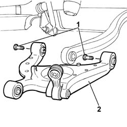
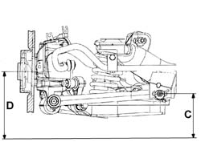

4420B34 Rear suspension TRACK CONTROL ARM, left or right - R.R.
- Path
- Procedures > 44 SUSPENSION AND WHEELS > 4420 REAR SUSPENSION > 4420B REAR SUSPENSION TRACK CONTROL ARMS > 4420B34 Rear suspension TRACK CONTROL ARM, left or right - R.R.
- Kind
- repair procedure (removal / refitting; the operation number is the code)
- Applies to
- all engines; all production periods
- Interactive page
- https://sloeber94.github.io/elrnDB-lThss/en/#/78888
Applies to: all engines; all production periods
 Removing
Removing
 Refitting
Refitting- Position the vehicle on a lift.
- Disconnect the negative battery terminal.
See in Op. 7040D50 ENGINE COMPARTMENT UPPER SOUND INSULATION SHIELD - R.R.
See in Op. 7040B10 LOAD CARRYING COMPARTMENT LINING - R.R.
See in Op. 7040B17 Luggage compartment/load platform side trim flap (one) - Replace
See in Op. 7040B13 Luggage compartment/load platform SIDE LINING - R.R.
See in Op. 4450B11 Rear WHEEL (one) - R.R.
See in Op. 7055B43 REAR WHEEL ARCH LINER (one), left or right - R.R.
See in Op. 4440K30 LEFT OR RIGHT REAR INTELLIGENT SUSPENSION SHOCK ABSORBER (ONE) - R.R.
-
See in Op. 3310B36 REAR BRAKE CALIPER (one), left or right - R.R.
See in Op. 3310B48 REAR BRAKE DISC (one), left or right - R.R.
See in Op. 4450D10 Rear wheel HUB, left or right - R.R. with wheel removed
-
See in Op. 3310B59 Rear brake DISC GUARD (one), left or right- R.R.
-
1. Undo the bolts fixing the track control arm to the rear axle.
2. Remove the rear suspension track control arm.
- If the track control arm is being replaced, remove the connecting rod from the track control arm and fit it on the new track control arm.

Applies to: all engines; all production periods
Refitting
Removing- Position the rear suspension track control arm.
- Tighten the bolts fixing the track control arm to the rear axle.
- Proceed with refitting the remaining components to ensure the optimum conditions to be able to rest the vehicle on the support.
-
See in Op. 3310B59 Rear brake DISC GUARD (one), left or right- R.R.
See in Op. 4450D10 Rear wheel HUB, left or right - R.R. with wheel removed
-
See in Op. 3310B48 REAR BRAKE DISC (one), left or right - R.R.
See in Op. 3310B36 REAR BRAKE CALIPER (one), left or right - R.R.
See in Op. 4440K30 LEFT OR RIGHT REAR INTELLIGENT SUSPENSION SHOCK ABSORBER (ONE) - R.R.
-
See in Op. 4450B11 Rear WHEEL (one) - R.R.
- Place the vehicle in Standard "A" conditions, in other words with the vehicle mass complete, spare wheel, tool kit, all supplies and accessories (oil, engine coolant, etc.) and a full fuel tank.
- Check that the tyre inflation pressure is correct.
- Position the vehicle on a support so that the wheels are resting on the ground.
Applies to: engines: 2.4 20V; all production periods
- Check that after the vehicle has been placed in standard "A" conditions, the measurement "D"-"C" corresponds to the figure given in the table below.
 | Subject | Value |
|---|---|---|
. | Rear wheel geometry | mm |
- | D - C | 21 ± 5 |
- | Standard A | - |

Applies to: engines: 2.4 JTD 10V; all production periods
- Check that after the vehicle has been placed in standard "A" conditions, the measurement "D"-"C" corresponds to the figure given in the table below.
| Subject | Value |
|---|---|---|
. | Rear wheel geometry | mm |
- | D - C | 21 ± 5 |
- | Standard A | - |
Applies to: engines: 3.0 V6, 3.2 V6; all production periods
- Check that after the vehicle has been placed in standard "A" conditions, the measurement "D"-"C" corresponds to the figure given in the table below.
| Subject | Value |
|---|---|---|
. | Rear wheel geometry | mm |
- | D - C | 21 ± 5 |
- | Standard A | - |
Applies to: all engines; all production periods
- Check that after the vehicle has been placed in standard "A" conditions, the measurement "D"-"C" corresponds to the figure given in the table below.
| Subject | Value |
|---|---|---|
. | Rear wheel geometry | mm |
- | D - C | 21 ± 5 |
- | Standard A | - |
Applies to: engines: 2.4 JTD 20V; all production periods
- Check that after the vehicle has been placed in standard "A" conditions, the measurement "D"-"C" corresponds to the figure given in the table below.
| Subject | Value |
|---|---|---|
. | Rear wheel geometry | mm |
- | D - C | 21 ± 5 |
- | Standard A | - |
Applies to: all engines; all production periods
 | Value - daNm | Fastening | Component | Ø |
|---|---|---|---|---|
. | (Crossmember side) 10 | Bolt | REAR WISHBONE | M12X1.25 |
See in Op. 7055B43 REAR WHEEL ARCH LINER (one), left or right - R.R.
See in Op. 7040B13 Luggage compartment/load platform SIDE LINING - R.R.
See in Op. 7040B17 Luggage compartment/load platform side trim flap (one) - Replace
See in Op. 7040B10 LOAD CARRYING COMPARTMENT LINING - R.R.
See in Op. 7040D50 ENGINE COMPARTMENT UPPER SOUND INSULATION SHIELD - R.R.
- Connect the negative battery terminal.
- Remove the vehicle from the lift.
Topics linked from this page (13)
- 3310B36 REAR BRAKE CALIPER (one), left or right - R.R.
- 3310B48 REAR BRAKE DISC (one), left or right - R.R.
- 3310B59 Rear brake DISC GUARD (one), left or right- R.R.
- 4440K30 LEFT OR RIGHT REAR INTELLIGENT SUSPENSION SHOCK ABSORBER (ONE) - R.R.
- 4450A40 REAR WHEEL GEOMETRY - Check using optical equipment - Includes rear wheel toe-in adjustment if necessary
- 4450B11 Rear WHEEL (one) - R.R.
- 4450D10 Rear wheel HUB, left or right - R.R. with wheel removed
- 4450D15 Rear wheel hub STUB AXLE, left or right - R.R. Including replacement of bush, if necessary
- 7040B10 LOAD CARRYING COMPARTMENT LINING - R.R.
- 7040B13 Luggage compartment/load platform SIDE LINING - R.R.
- 7040B17 Luggage compartment/load platform side trim flap (one) - Replace
- 7040D50 ENGINE COMPARTMENT UPPER SOUND INSULATION SHIELD - R.R.
- 7055B43 REAR WHEEL ARCH LINER (one), left or right - R.R.